|
問題です。 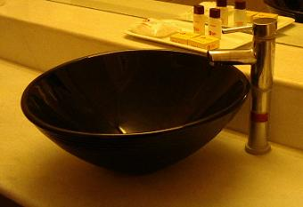 前日泊まったホテルにもあり、ちょっと変っているから写真を写していこうと言っていたこの代物。 洗面器といってもお風呂で身体を洗ったりするプラスチックのアレではなく、洗面所に取り付けられていて顔を洗ったり歯磨きをしたりするあの陶器の洗面器で、普通は鏡の前の台に埋め込まれているのですが、ここでは洗面台の上に大きなどんぶりがぽんと置かれているような形で乗っており、当然のことながら背の低い私にはちょっと高すぎて、背伸びをして顔を洗わねばなりませんでした。（＾ｍ＾； 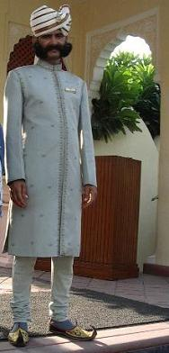 この日は午前８時の出発でしたが、また同じところに戻ってくるので持ち物のすべてをスーツケースにしまい込んで時間までに部屋の外へ出すこともなく、身支度も朝食もトイレも余裕を持って済ませ、バスに乗り込んでも楽々と前の席が取れそうでしたが、ちょっと遠慮して少し後ろの席に座りこみました。 まずは４０分走って豪華ホテルに泊まったグループを迎えに行き、バスの中で待っているだけではつまらないので、入り口に立っていたおひげのおじさんと一緒に記念撮影をしました。（靴の先っぽがくるりと反り返っているのがインドらしいでしょ？） 本当はこのおじさんの左側には、気をつけてはいたもののやっぱり後ろ足体重になってしまい、ぽっこりお腹の目立つスタイルで立っていた私がいるのですが、ご覧になっている方々の気分が悪くなってもいけませんのでカットしました。（≡△≡； ほぼ全員が写真撮影を終わった頃にリッチ組もそれぞれの席に落ち着き、楽しみのひとつであった『象のタクシー』に乗って行く予定になっていた中世の丘陵城塞【アンベール城】に向かいます。 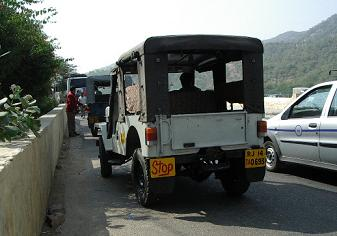 広場に屋台店がいくつも出ているようなところでバスを降り、ジープに乗り換えるわけですが、これがまた想像以上の年代もので、写真のものはまだ新しい方です。 私たちが乗るジープの座席には毛足の長い動物の縫いぐるみのような、黒いボア様のものが敷いてあり、できることならそれをまくって座りたかったくらいに、見るからにねっとりとしておりました。 さて、どんなところを走っていくのか…と外を見ていると、かなり傾斜のある細い坂道をうねうねとジープは登って行き、その道には像のものらしきまだ生々しいでっかいう○こがあちこちにぼたぼたと落ちています。 乾いて風化されかけたような残骸もそこここに見られ、あれは車や人に踏まれて風に舞って消え去りつつある運命に違いない…と、思われました。 １０分ほどで高い城壁の前に到着しましたが、道中残念ながら象を見ることもなく、車から降りても依然として登っている石畳風の道を城壁に沿って歩いて行くと、きれいなピンク色の大きな門が現れました。 門を潜って一歩足を踏み入れると、そこはもう完璧に城壁というよりは建物で囲われた庭園でした。 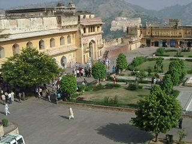 前日訪れたクトゥブ・ミナールで使われていた石の名前を忘れていましたが、ジャイブールという街は別名『ピンク・シティ』とも呼ばれており、この地域の古い建物はこのアンベール城をはじめほとんどが『赤砂岩』という石によって造られているそうです。（クトゥブ・ミナールもこの石で造られていました） 左端にある大きな木の後ろに連なるピンクの建物に沿って人波が続いていますが、中央あたりに二階まで届くような大きくアーチ型になっているのが正門で、その門の上には外側も内側もしっかり見渡せそうな見張り台があります。 右側の通路は人通りも少なく、鳩と一緒に餌を食べている猿がいたりしてまったくのどかな風景が見られました。 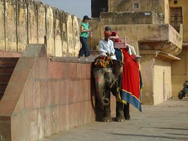 門の向こう側にちょっと赤っぽいレンガ色の低い舞台のようなところがありますが、これが右の写真の象乗り場になっており、二人連れの女性客の一人が王様の乗り物とされた象の背中に設えた座席に座っており、今まさにもう一人のお客さんが乗ろうとしているところです。 象は壁にピッタリと身体を寄せてお客さんが乗るまでじっとしていますが、これがその日（午前中？）最後の仕事であったらしく、その後は象を見ることはありませんでした。 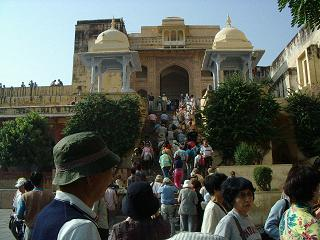 日本のお城からすると二の門とでも言いましょうか、上の写真の門から人波が続いていた先がこの階段で、左上の豆粒のような人の姿があるところから庭園の全貌が見渡せました。 階段を上がって行く途中で右側の建物の壁を伝ってなにかがするすると下りて来るのが目に入り、入り口の手前両側に角の生えた肉まんのような物が乗っかっているテラス風のところを覗いてみると、下へ降りる階段があってその下の踊り場で、しっぽの長い猿が何匹か手摺りに乗っておりました。 こんなに沢山の人が上り下りしている階段のすぐ近くにありながら、テラスに行かなければ見えないので、気がつく人も少なかったようでしたが、山に囲まれているので昔からこのように猿が自由に出入りしていたのかもしれません。 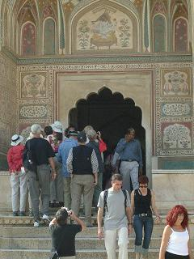 この入り口が玄関にあたり、上に描かれている象の絵は『商売繁盛』を象徴しているそうで、内側に開かれる二枚の扉は、開け閉めをするたびにぱおぉーん！と象の鳴き声を発し、王様が帰ってきたことを宮殿内の人に知らせるようになっているそうです。 山の上にあるということで風通しはよかったのではないかと思いましたが、城壁で防御を固めた宮殿のこと、気温湿度ともに高くなる雨期に備えてそれぞれの箇所で工夫が施されており、屋上・室内の壁のあちこちがレース様にくり抜かれていたり、いろいろな形の窓のような穴が開いており、風通しと同時に見張り台や攻撃用にも使われていたようです。 そのくり抜かれていた穴や城壁から外を見ると、城を取り囲むように四方に山々があり、その山々の峰には万里の長城のごとく造られた木道のような道が、見渡す限り延々と続いています。 それは山の輪郭を模るように城からすべて見晴らせるようになっており、よくよく見ると所々に宮殿への最短距離らしき道も造られているようで、望遠鏡などがなくてもそこに挙動不審な人物がいれば、どこからでも一目でわかりそうです。 城からもいくつもの隠し通路があるそうで、 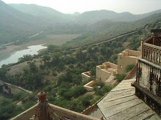 アンベール城のある丘陵の下に湖があり、その湖の中に子供たちを遊ばせるための庭園が設けられていましたが、斜面に突き出たピンクの屋内階段になっているらしき部分が湖に向かって下へ下へと伸びていました。 後方の斜面を一直線に伸びている白い道のように見えているのが、周りの山に造られている木道と同じもののようで、今でも歩いて行けそうなくらいにしっかりしているように見えました。 湖を挟んで山すそが見えていますが、この山にも稜線上に張り巡らされた木道があり、四方から守られた湖上の遊び場で、子供たちは安心して水遊びをしたり鬼ごっこをしたりしていたことでしょう。 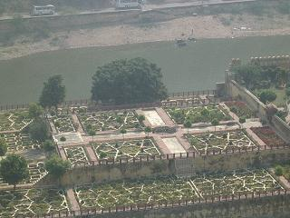 これが湖の遊び場で、バスが走る道路下にぽつんと見えているのが水浴びをしている象たちです。 三段に高低をつけた人工島は、宅地造成地をひとまず公園にしたというような景観で、家が何件も建ちそうなくらい広々としており、全体が上手く入らなかったのが残念ですが、遠い風景になるとみんなこのように曇ってしまうので、山の稜線に造られた万里の長城風の写真も写してきたのですが、そのままのサイズで見ても何が撮りたかったのかよくわからない状態なので掲載を諦めました。（ _w_； 宮殿内は酷暑をしのぐための様々な工夫が施されており、軒先に沢山の穴が空いたパイプを這わせ、水のカーテンができるようになっていたり、随所に細い水路を設けて水が流れるようになっており、その水の流れと湖からの風の通り道を利用して天然クーラーのようになっていたそうで、高い（と言ってもジープで５分もあれば門前まで登れる）山の上のことで今は水の流れはありませんでした。 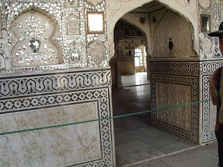 また、装飾として細かくした鏡を埋め込んで花などの模様を天井や壁に描いたテラスのある部屋があり、雨期の時期などに灯したロウソクの光が幻想的に反射するように工夫された『星空の間』などもありました。 宮殿の中は階段だけではなく、現在のバリアフリーのようなスロープも作られており、あらゆる宝石で身を飾り立てて一人で歩くのが困難なほど重いものを身にまとっていたお妃様が、車椅子のような物に乗って部屋部屋を移動していたそうです。 ゴム製のタイヤなどというものはなかった時代のことなので、車輪は石で造られており、椅子だけでもかなりの重量がありそうで、一階から二階へ上がるときなどは緩やかなスロープとはいうものの、力のある男性でも一人ではかなり大変だったであろうと思われました。 イスラムの女性は人に顔を見せない風習があったので、王様が遠征などに出かけていくときに見送るための小さな覗き窓などは日本の城にはないもので、お妃用に高い位置にある窓と子供用に低い位置にある二つの窓があり、レース様にくり抜かれどこからでも外を見ることのできる壁を真ん中に挟んで、第二婦人用のものもありました。 アンベール城から出て待っていたジープに乗ると、物売りの少年たちがどこからともなくわらわらとやって来て、車の中に上半身を乗り入れてしつこく土産物を売りつけてきます。 なぜボールペンをあげるのか意味がわかりませんでしたが、後で聞いたところによりますと他の車でボールペンを渡した人がいたそうで、ペンを貰った少年はなぜか車から素直に離れたのだそうです。 山道を下って舗装した道路に出ると、前を走っていたと思われる同じツアーの人たちが乗ったジープが道の端で止まっており、なにごとか？と思ったらパンクしてました。 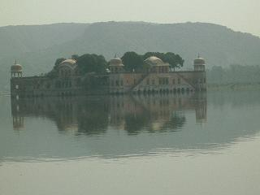 次に訪れたのは昨日の夜も通った 【水の宮殿】で、ご覧の通り湖の中に建っているのでバスから降りて写真撮影のみでしたが、アンベール城と同じく1700年代の初めに王様の夏の別荘として建てられたのだそうです。 お昼はこの日もカレーで、同じカレーでも店々によって中に入っている具も味も全然違うので、滞在中は今度はどんなカレーが出てくるのかと毎日楽しみでもありましたが、とにかくカレーづくしなのでどこで何を食べたのかまったく記憶にございません。（＾へ＾； …と言うか、『づくし』でなくても私の場合は、口の入って消化してしまえば何を食べたのかすでに忘れているのですが。。。 昼食はほとんど街中のレストランで、木立に囲まれた庭にオープンテラスがあったレストランであったり、うなぎの寝床のような細長い店内の奥にある狭い階段を上がったカントリー調の店だったり、花々を植えた小道に象の神様（？）を奉ってちゃっかり賽銭箱らしきものまで置いてあった店だったり、もの凄く混んでいるテーブルの間を上手に移動しては料理やナンを配っていく店員さんたちのいる店だったり…と、様々でした。 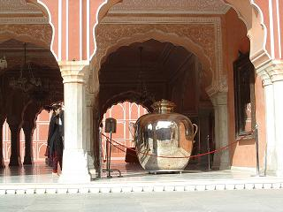 昼食後はジャン・シン２世が建てた【シティー・パレス】という、これまたピンクづくしのゲームセンターのような名称の宮殿で、博物館になっている宮殿内には大きさや形の違った刀や盾、お妃様たちが身につけていた装飾品などが展示されていました。 写真『銀の壷』は、柱の左にチラリと姿の見える女性の身長から見ていただくと大きさがおわかりかと思いますが、これはマハラージャが１９０２年にエドワード２世の戴冠式に出席した時、ガンジス河の水を入れて船で運ばせたもので、その水は身を清めるため毎日の沐浴に使用されたのだそうです。 この銀の壷はふたつあり、世界最大の銀器としてギネスブックに載っているとのことです。 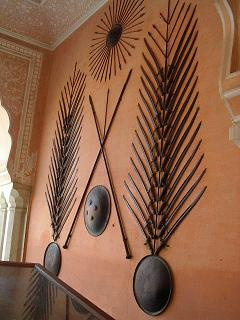 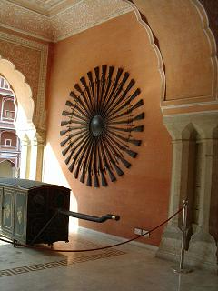 左は長さの異なる刀と盾を組み合わせて壁に飾り付けたもので、右側は銃です。 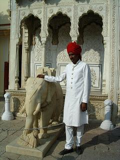 ハリーさんから離れたところにいたので、説明は聞き逃しましたが、なぜかひとつだけ白い建物がありこんな子象が対で置かれておりました。 アラビアンナイトの童話で盗賊たちが持っていたような刀や、姫君たちが身につけていた豪奢なドレスやアクセサリー類、王様の着ていた細かなプリーツ加工のされた衣類などを存分に見学して、また車中の人となります。 ハリーさんが言うことには、私たちの乗っていたバスは『とても良いバス』なのだそうですが、昨日座っていた前から二番目（一番前は危険防止のために乗客は座ってはいけないことになってました）の席は、 クーラーの送風口が壊れており、朝方は寒くてクラフトテープで塞いでもらい、暑くなったらテープの片側を外して風が来るようにしていました。 空港に迎えに来たバス以外は滞在中同じバスで、この日最初に座ったところはやっぱり送風口が壊れていたので、一つ後ろに移動したのですが、窓ガラスがきっちり閉まらずいつの間にか開いてくるので、何度も何度も閉めなければなりませんでした。（＾へ＾； とは言うものの、現地の人たちが乗っているバスに比べれば、私たちが乗っているバスには さて、予定表を見ると午前中に見学するはずであったのが、何の説明もないままいつの間にか省かれてしまっている！と話していた【風の宮殿】を見に行きました。 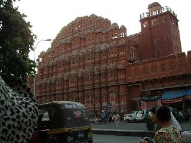 それは、説明がなければ誰も気付かずに通り過ぎてしまいそうな、何の変哲もない商店街の大通りに面してあり、こうして写真で見ると大変立派な宮殿のように見えますが、よくよく見ると実は奥行きがほとんどない建物です。 何のためにこのような物が建てられたのかと言いますと、王族の女性たちが人に顔を見られないように、大通りのパレードや町の様子を見下ろすためなのだそうで、その窓の数は…忘れてしまいましたが、写真の両側にはみ出した建物もあって、三桁はあったと思います。（＾_＾； 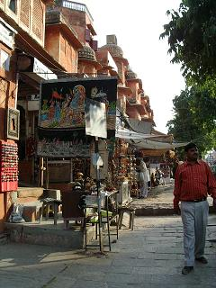 大通りは片側二車線道路くらいで、真ん中に安全地帯にしてはちょっと細目ですが、センターベルトが盛り上がっているのがおわかりかと思います。 場所が場所なだけにバスをいつまでも停車させておくわけにもいかず、記念写真に建物の全体が入るように…という配慮があったのかどうかは定かではありませんが、大通りを挟んだ向かい側から５分程度の見学＆撮影タイムで、私たちがカメラのシャッターを押していた向かい側は、これまたピンクのおしゃれな建物が並んでいました。 その後、インド独特の型押し模様を昔ながらの方法で、象や花などのゴム印のような物で、何度も色や形を変えて模様を作って行く行程を見せてくれる店で買い物タイム。 ここで簡単サリーであるパンジャリードレスを買うと、翌朝までにサイズ直しをしてホテルに届けてくれるのだそうで、何人かの人が買い求めたらしく、翌々日には涼しそうなパンジャリードレスを身にまとった奥様方の姿が見られました。 インドで着るにはちょっと地味目な色合いですが、日本で着ればちょっと目立つかも… 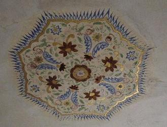 次に行ったのは宝石店ですが、宮殿の壁や天井を飾っていたものと同じ様式で、大理石などの石に様々な色の宝石を埋め込んだ飾り物やテーブル板などが店内を陣取っています。 写真はアンベール城のある一室の天井の真ん中に、パラソルを逆さにしたような形で飾られていたものですが、このように模様を模るパーツのひとつひとつが宝石で、磨きこまれた大理石に散りばめられているのです。 見ているだけで幸せな気分になれそうで欲しかったのですが、 アクセサリー類もかなり置いてあったようですが、私はあまり興味がないので店内を一巡するついでに見たくらいですが、バスの近くで待っていると、それぞれに何かしら紙袋を提げた人たちが店を出てきました。 一通りの行程を終えてバスはホテルへの帰り道を走り始めましたが、ふと気がつくと朝私たちのホテルを出て向かった豪華ホテルへの道を走っており、ホテルに近づいてから予定表にはなかったダンスショーがそのホテルで行われるということを知らされました。 私たちは一旦自分たちのホテルに帰って出直してくるということだったのですが、片道４０分ですよ！ 豪華ホテルに到着したのが６時少し前で、ショーが始まるのが８時といいますから、それから４０分×２もの時間をかけてホテルに帰って一体なにができるというのか… 添乗員さんが『このホテルで休息していても良い』というようなことをチラリと言って、誰もが賛成したため２時間あまりの時間をリッチホテルで過ごすことになりました。 バスに乗ったまま敷地内への門を潜り、外庭の中をぐるりと回って、朝おひげのおじさんとの撮影会を繰り広げた入り口でバスを降り、そこからは見えないホテル屋内への入り口に向けて基本料金グループの足が入ります。 透明なガラス石のようなものが敷き詰められた浅い池が水色の照明で照らされ、それが碁盤の目のように四角く仕切られて通路の両側にあり、インドでは始めて見るプルメリアの白い花が浮かべられていました。 そこに宿泊している人たちはそれぞれの部屋に帰り、私たちはフロアーの長椅子にどかっと座り込んで、暫くは死んだようにぐてっとしていましたが、暫くして体力を回復すると、折角こんな豪華ホテルに来れたのだから…とばかりに、あちこちの店を覗き歩き、２時間足らずの間にこのホテルの売店の売り上げにしっかり貢献してしまったようです。（＾ｍ＾； 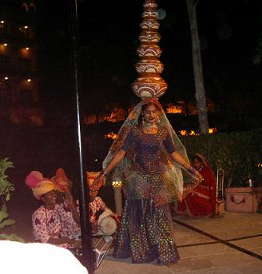 予定の８時より１５分ほど早くダンスショーが始まると添乗員さんから知らせがあり、奥庭の一角にイスを並べ立てた『会場』へ集合してみると、二人の若い女性と子供との７人ほどの一団が、小さな太鼓を鳴らしたりしている中で、いくつかの壷のようなものを頭の上に乗せて踊り始めました。 ダンスショーと言うからには、ライトに照らされた舞台の上で華々しく繰り広げられるものと思っていたので、 まあ、無料で見られると聞いた時点でそれに気付かなかった私も私ですが、最後は観客も連れ出して１５分くらいのショーは終了し、小さな男の子がやっぱりお金を入れる容器を持って回ってきました。 インドの女性は目が大きく笑顔がとてもチャーミングですが、ダンスをしている間は笑ってはいけないものとされているのか、大きな目を左右に動かしますがその口元はほころぶことはありませんでしたが、少年が持っている容器にお金が入ったときは本当に嬉しそうに微笑みました。 私たちはそれから４０分かけてホテルに帰り、遅がけの夕食を済ませて部屋へ戻ると、なにやら外でドン！ドン！と音がするので窓のカーテンを開けてみると、遠くで赤い花火がひとつ花開くのが見えました。 音はまだ聞こえているのですが、その後暫く見ていても花火は見られず、シャワーを使ったり翌日の準備をしたりしてインド二日目も無事終了しました。  続きを読む
続きを読む
 |